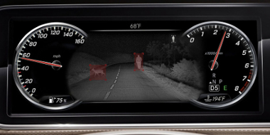
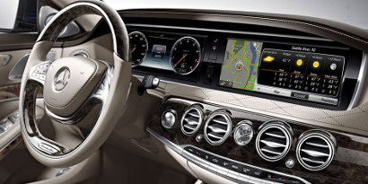
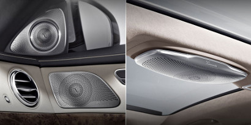
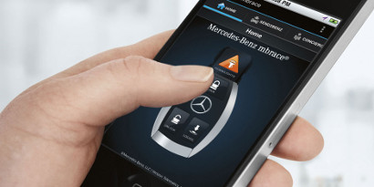

Technologie

Responds to danger, before you're in it.
For decades, the S-Class has predicted the safety standards of the future. Today's S-Class literally looks ahead, and 360 degrees around, to spot hazards in your path. A team of standard and optional systems can alert the driver, assist in braking, and even respond autonomously to help avoid collisions with other vehicles and pedestrians.

Responds to your touch, without lifting a finger.
Dual 12.3-inch high-resolution screens combine the clarity of analog-style instruments with lifelike animated displays of driving systems, vehicle settings, entertainment and navigation. A console-mounted touchpad makes the advanced COMAND® system intuitive to use, so even the most innovative features quickly feel like like second nature.

Music from anywhere, surrounds you from everywhere.
With local, nationwide SiriusXM and global Internet radio, plus multiple ways to bring your own soundtrack, the S-Class offers nearly limitless listening. Two sound systems by Burmester®, Germany's revered name in high-end home audio, offer a choice of lush surround sound or a High-End 3D system that sets a standard in audiophile quality.

Constant connections, to set you free.
From your car, computer or phone, mbrace connects you to your world. It puts an ever-growing array of apps in your car. Its smartphone app includes new Remote Start. Yelp® and local search make it easy to find your way. And mbrace even looks after your car with new remote diagnostics. For 2016, five years of mbrace® Connect features and services are standard.